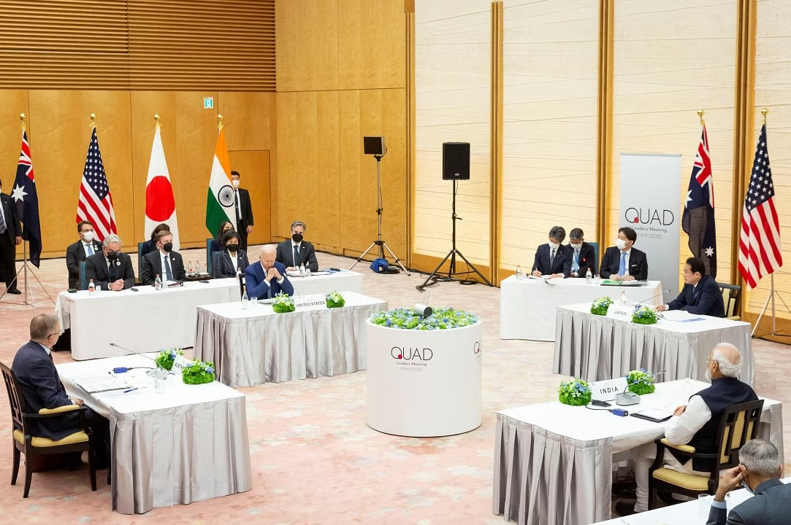
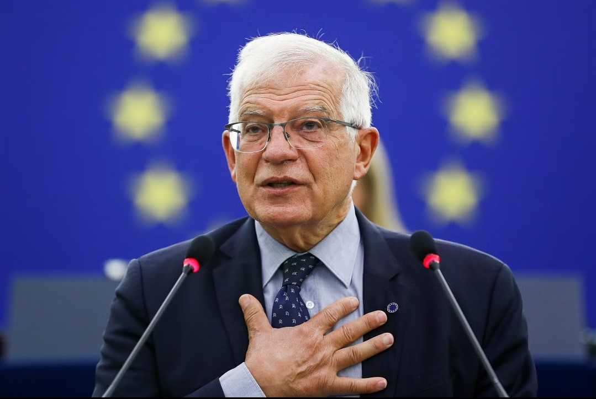

Ukraine repels Russian attacks
Ukraine said yesterday it had shot down six Russian hypersonic Kinzhal missiles in a single night, thwarting a superweapon Moscow had previously touted as all but unstoppable. It was the first time Ukraine had claimed to have struck an entire volley of multiple hypersonic missiles, and if confirmed would be a dramatic demonstration of the effectiveness of newly deployed Western air defences. For all latest news, follow The Daily Star's Google News channel. The six Kinzhals, ballistic missiles which travel at up to 10 times the speed of sound, were among a volley of 18 missiles Russia launched at Ukraine overnight, lighting up Kyiv with flashes and raining debris after they were blasted from the sky. The commander-in-chief of Ukraine's armed forces, Valeriy Zaluzhnyi said all had been successfully intercepted. However, Russia said that all the targets assigned by its military in an overnight missile barrage on Ukraine had been hit.
Iran, Russia expanding military
The United States said Monday that Iran and Russia are "expanding their unprecedented defense partnership," as Moscow ramps up ties with Tehran after being hit with Western sanctions. Russia, one of the world's top military powers, has been obliged to rely on Iran for supplies as it suffers battlefield losses in its invasion of Ukraine, according to US intelligence. For all latest news, follow The Daily Star's Google News channel. US National Security Council spokesman John Kirby cited Moscow's desire to acquire more sophisticated unmanned military drones as a key part of the growing cooperation. "Interactions between Iran and Russia in matters regarding the selling of advanced weapons, especially more advanced UAVs, are now continuing," he told reporters. "This is a full scale defense partnership that is harmful to Ukraine, to the region in the Middle East, and to the international community," he said.
Australia cancels Quad meeting after Biden postponement
Australian Prime Minister Anthony Albanese said on Wednesday a Quad summit would not go ahead in Sydney next week without US President Joe Biden, who postponed his trip to Australia due to debt ceiling negotiations in Washington. Albanese said the leaders of Australia, the United States, India and Japan would instead meet at the G7 in Japan this weekend, after Biden canceled a trip to Sydney on the second leg of his upcoming Asia trip, which was also to have included a visit to Papua New Guinea. For all latest news, follow The Daily Star's Google News channel. "The Quad leaders meeting will not be going ahead in Sydney next week. We, though will be having that discussion between Quad leaders in Japan," Albanese told a news conference. A bilateral programme in Sydney with Indian Prime Minister Narendra Modi could still go ahead next week, Albanese said.
Legal notice served against Wizz Air Abu Dhabi
Bangladesh Jubo Orthonitibid Forum (Bangladesh Youth Economist Forum) today served a legal notice to the Civil Aviation Ministry, Civil Aviation Authority of Bangladesh (CAAB) and Biman Bangladesh Airlines asking them not to give permission to Wizz Air Abu Dhabi, a low-cost airline to operate flights on Dhaka-Abu Dhabi route.Mosharrof Hossain Kajol, a Supreme Court lawyer served the notice on behalf of Youth Economist Forum saying the country's two airlines -- Biman and US-Bangla -- will be severely affected if CAAB gives permission to the ultra-low-cost carrier Wizz Air going against the interest of the country.
‘Mrs Chatterjee vs Norway’: A mother’s fight for justice
The Rani Mukerji starrer, "Mrs Chatterjee vs Norway" is a heart wrenching tale of an Indian immigrant who struggles for the custody of her own children, when they are placed in foster care by Norwegian childcare services. Based on a true event, the film follows the life of Debika Chatterjee, drawing inspiration from the real-life story of Sagarika Chakraborty, an Indian woman whose children were forcefully taken away by the Norwegian authorities.The film opens with Debika frantically chasing a car as three women forcefully take her children away. The car speeds away with her five-month-old baby, whom she breastfeeds, and her son, who attends a neighbourhood kindergarten and is suspected to have autism. Her desperation builds as she realises her husband Anirudh may be pursuing the legal struggle to reconnect with their children just half-heartedly because he is more focused with obtaining citizenship. All this results in Debika's strong obsession with regaining custody of her children.
Navigating higher education abroad
In today's interconnected world, studying abroad is an excellent way for Bangladeshi students to broaden their horizons and gain a global perspective, which can have a positive impact on their future career prospects. The United Kingdom and the United States are two of the most sought-after destinations for higher education, thanks to their top-ranked universities and diverse student communities. However, applying to universities in these countries can be a daunting process, requiring careful consideration and preparation. As someone who has navigated this process, I understand the challenges and opportunities that come with studying abroad. I also know how important it is to have access to reliable information and guidance to make informed decisions. In this article, we'll explore some key considerations for Bangladeshi students who are interested in pursuing higher education abroad. Whether you're just starting your research or ready to apply, I hope you'll find some valuable insights here.
EU should crack down on India for reselling Russian oil: Borrell
The European Union should crack down on India reselling Russian oil into Europe as refined fuel, including diesel, EU foreign policy chief Josep Borrell said in an interview with the Financial Times published on Tuesday. India has emerged in the past year as a top buyer of Russian oil following Moscow's invasion of Ukraine on Feb. 24, 2022. Access to cheap Russian crude has boosted output and profits at Indian refineries, enabling them to export refined products competitively to Europe and take a bigger market share. For all latest news, follow The Daily Star's Google News channel. Borrell told the newspaper he would raise the issue with India's foreign minister, Subrahmanyam Jaishankar, at a meeting in Brussels on Tuesday. "If diesel or gasoline is entering Europe ... coming from India and being produced with Russian oil, that is certainly a circumvention of sanctions and member states have to take measures," the EU's chief diplomat said.
Imran Khan's bail extended
Pakistan's former Prime Minister Imran Khan secured an extension to his protective bail until May 31, his lawyer said today, as an official announced people involved in violent protests over his arrest would be tried in military courts. Khan had been bailed by the Islamabad High Court last Friday following his May 9 arrest, which sparked violent protests across the country that killed at least eight people. For all latest news, follow The Daily Star's Google News channel. The court extended the bail, which had been due to expire today, because the prosecutor requested more time to produce details of the case against him, Khan's lawyer Faisal Chaudhry told Reuters. The arrest of the former prime minister, who was ousted in a parliamentary confidence vote in April last year, has deepened political instability in the South Asian nation of 220 million.